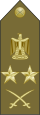
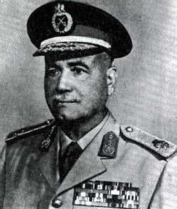
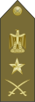
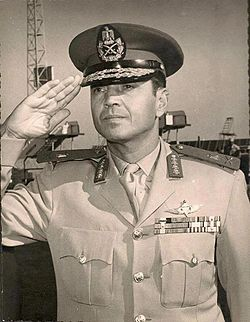
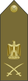
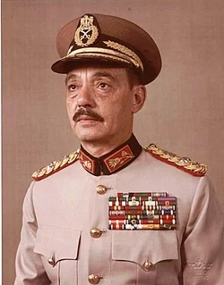
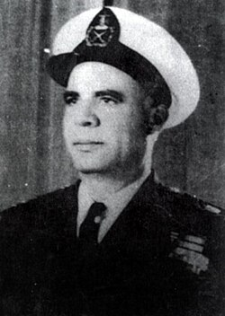
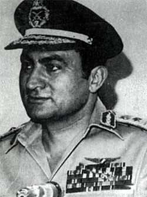
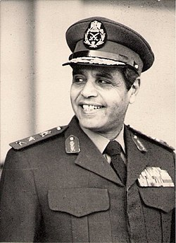


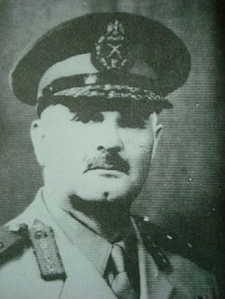
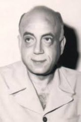
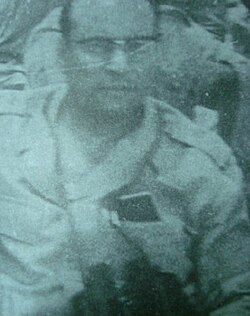
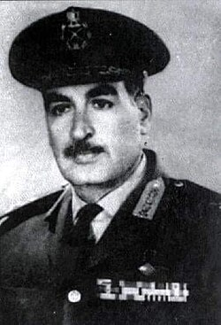
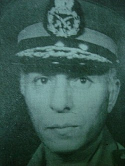
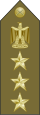
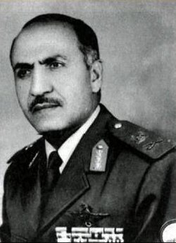
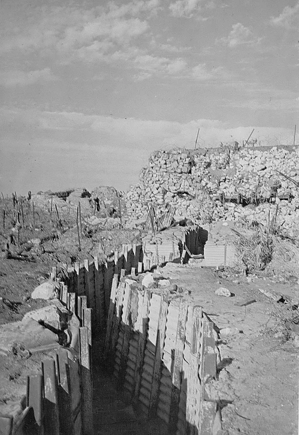
شهدت القيادة العسكرية المصرية العديد من التغيرات بعد حرب 1967 حتى قبل حرب أكتوبر 1973:
| المنصب | الاسم | القيادة | القائد الأعلى للقوات المسلحة المصرية | 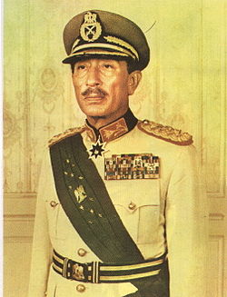 |
محمد أنور السادات | رئيس جمهورية مصر العربية |
|---|
| الرتبة | الاسم | القيادة | فريق أول  |
 |
أحمد إسماعيل علي | القائد العام القوات المسلحة للقوات المسلحة ووزير الحربية، والقائد العام للجبهات (المصرية والسورية والأردنية) | فريق  |
 |
سعد الدين الشاذلي | رئيس أركان حرب القوات المسلحة (حتى 12 ديسمبر 1973) | لواء  |
 |
محمد عبد الغني الجمسي | رئيس هيئة العمليات (تولى منصب رئيس الأركان في 12 ديسمبر 1973) | لواء بحري |  |
فؤاد ذكري | قائد القوات البحرية | لواء طيار |  |
محمد حسني مبارك | قائد القوات الجوية | لواء |  |
محمد علي فهمي | قائد قوات الدفاع الجوي | لواء | |
نوال السعيد | رئيس هيئة الإمداد والتموين | لواء | |
كمال حسن علي | مدير سلاح المدرعات | لواء |  |
محمد سعيد الماحي | مدير سلاح المدفعية | لواء |  |
إبراهيم فؤاد نصار | مدير المخابرات الحربية | لواء |  |
جمال محمد علي | مدير سلاح المهندسين العسكريين نائبه هو (العميد الشهيد أحمد حمدي) | لواء |  |
محمد عبد المنعم الوكيل | مدير سلاح المشاة | لواء |  |
نبيل شكري | قائد قوات الصاعقة | عميد  |
 |
محمود عبد الله | قائد قوات المظلات |
|---|
| الرتبة | الاسم | القيادة | لواء | 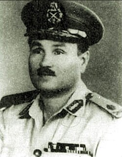 |
سعد الدين مأمون | قائد الجيش الثاني | لواء | 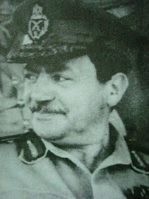 |
عبد المنعم خليل | رئيس أركان الجيش الثالث | لواء | 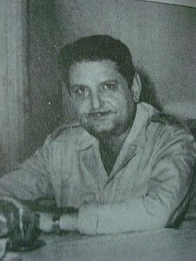 |
تيسير العقاد | رئيس أركان الجيش الثاني | عميد | 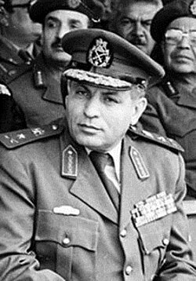 |
محمد عبد الحليم أبو غزالة | قائد مدفعية الجيش الثاني |
|---|
| الرتبة | الاسم | القيادة | لواء | 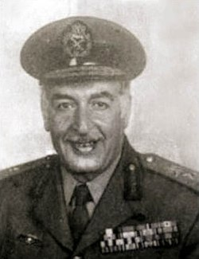 |
عبد المنعم محمد واصل | قائد الجيش الثالث | لواء | مصطفى شاهين | رئيس أركان الجيش الثالث | لواء | محمد نبيه السيد | رئيس عمليات الجيش الثالث | عميد | 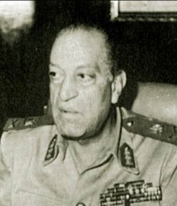 |
منير شاش | قائد مدفعية الجيش الثالث |
|---|
| الرتبة | الاسم | القيادة | عميد | 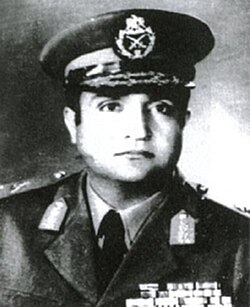 |
حسن أبو سعدة | قائد الفرقة 2 مشاة | عميد | 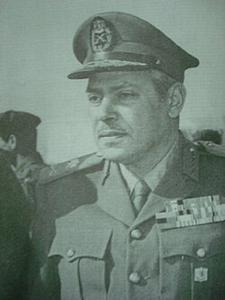 |
محمد نجاتي فرحات | قائد الفرقة 3 مشاة ميكانيكي | عميد | 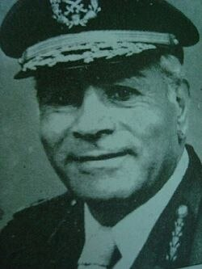 |
محمد عبد العزيز قابيل | قائد الفرقة 4 مدرعة | عميد | 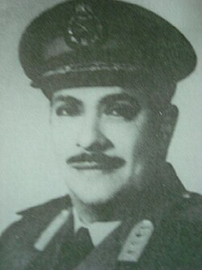 |
محمد أبو الفتح محرم | قائد الفرقة 6 مشاة ميكانيكي | عميد | 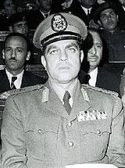 |
أحمد بدوي سيد أحمد | قائد الفرقة 7 مشاة | عميد | 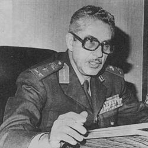 |
عبد رب النبي حافظ | قائد الفرقة 16 مشاة | عميد | 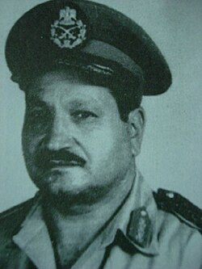 |
فؤاد عزيز غالي | قائد الفرقة 18 مشاة | عميد | 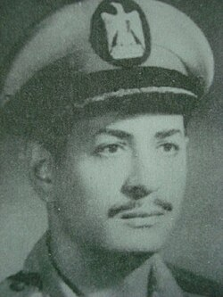 |
يوسف عفيفي | قائد الفرقة 19 مشاة | عميد | 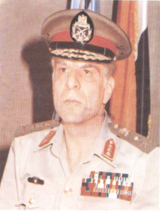 |
إبراهيم العرابي | قائد الفرقة 21 مدرعة | عميد | 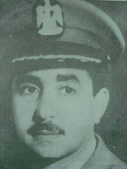 |
أحمد عبود الزمر | قائد الفرقة 23 مشاة ميكانيكي |
|---|
مدرسة ستي سبورت
حقوق النشر محفوظة ©